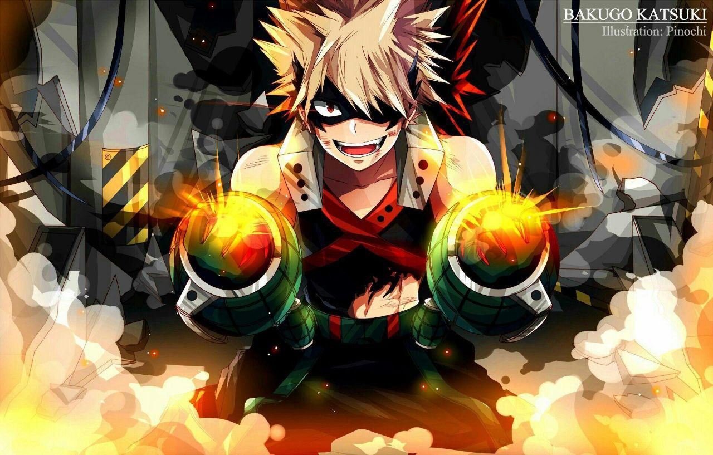
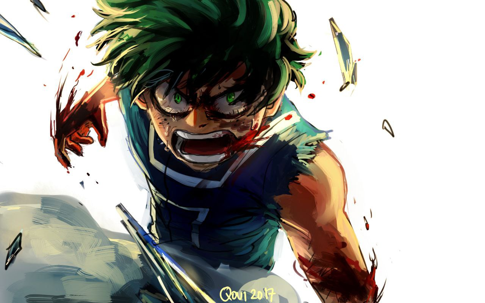
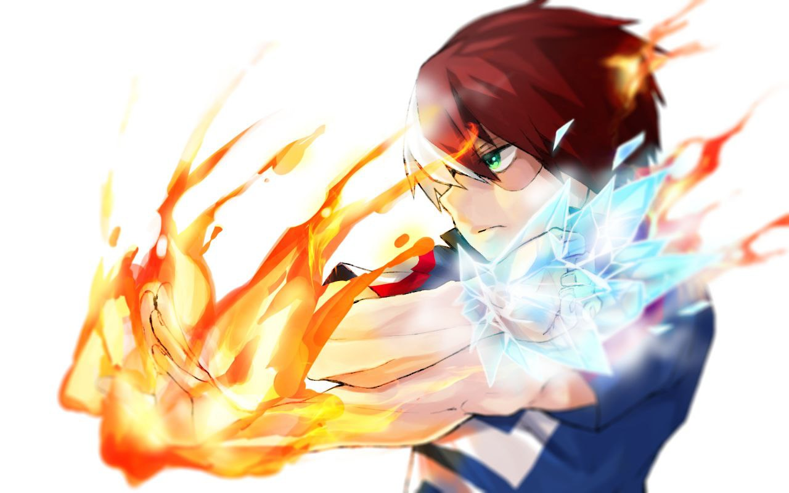

My Hero Academia memang anime yg terkenal pada kalangan Otaku, terumata Otaku Indonesia. Anime ini disesuaikan menurut manga Weekly Shonen Jump. Musim pertama adaptasi anime dimulai dalam tahun 2016 & kini season kelima terbaru yg telah dirilis dalam tahun 2021. Karakter primer merupakan seseorang anak pria Izuku Midoriya, yg dalam awalnya tidak mempunyai Quirks (kemampuan khusus). Tetapi dalam akhirnya justru jadi superhero.
Berikut adalah 3 Karakter terkuat Boku No Hero Academia kelas 1-A
penasaran? baca sampai habis ya!
1.Katsuki Bakugo

sumber foto: wallpapercave
Katsuki Bakugo adalah karakter menakutkan yang memiliki kekuatan meledakkan berbagai hal yang bisa membuat kerusakan besar. Katsuki Bakugo, juga dikenal dengan nama panggilannya Kacchan dan nama pahlawannya Dynamight, adalah seorang pahlawan super dan salah satu protagonis utama dari serial manga My Hero Academia
Bakugo mempunyai quirk yg relatif kuat, bernama Explosion. Quirk ini memungkinkan Bakugo mengeluarkan ledakan melalui keringat pada telapak tangannya. Semakin poly keringat yg dia keluarkan, maka akan semakin akbar ledakannya. Lantaran quirk ini dievaluasi sangat kuat, hal ini pun menyebabkan pertanyaan, apakah Explosion mempunyai kelemahan? Tentu saja quirk ini mempunyai kelemahan. Bakugo akan berada pada posisi yg kurang menguntungkan apabila dirinya bertarung pada wilayah yg dingin. Selain itu,ledakan yg dia ciptakan jua mengakibatkan rasa sakit dalam lengan & bahunya. apabila Bakugo memakai Explosion secara berlebihan, maka tidak menutup kemungkinan bahwa hal tadi bisa membangun kerusakan permanen.
2.Izuku Midoriya

sumber foto: pinterest
Izuku Midoriya terlahir tanpa Quirk sebelum All Might menganugerahkan padanya One For All. Setelah beberapa bulan pelatihan, Deku akhirnya menguasai Quirknya yang kuat. Dia sekarang di antara petarung terkuat secara fisik dalam seri. Pada akhir arc Pelatihan Gabungan, Deku diberi akses ke beberapa Quirks dari pengguna One For All sebelumnya. Ini memberinya keuntungan yang cukup besar atas lawan-lawannya, yang hanya bisa mengandalkan satu Quirk.
Mewarisi kekuatan All Might, Deku semenjak waktu itu menerima hal luar biasa. Kekuatan Deku pun kian tumbuh seiring berjalannya waktu. Saat ini, deku telah relatif bertenaga buat bertahan melawan sejumlah orang terkuat pada serial ini.
3.Todoroki Shoto

sumber foto: goodfon
Shoto Todoroki, juga dikenal dengan mononim Shoto, adalah seorang pahlawan super dan salah satu protagonis utama dari serial manga My Hero Academia, yang dibuat oleh Kōhei Horikoshi. Menjadi satu-satunya anak yang mewarisi kebiasaan baik Endeavour dan Rei, Shoto sering dipisahkan dari saudara-saudaranya. Todoroki Shoto dapat mengubah strategi pertempurannya kapan pun dia mau. Apinya memiliki kekuatan menyerang yang sangat kuat, sementara esnya dapat digunakan untuk bertahan.
Shoto Todoroki mempunyai kekuatan yg sangat luar biasa. Ia mampu memakai kekuatan ES menggunakan menurunkan suhu & memakai elemen barah yg sangat panas. Sejak kecil, Shoto dipaksa buat berlatih secara “Keras” sang ayahnya. Semua itu menciptakan shoto sebagai sosok yg sangat bertenaga menggunakan Bakat dua Elemen-nya yg sangat luar biasa.
Shoto Todoroki mempunyai Tekad yg sangat kuat. Semangatnya yg sangat tinggi menciptakan Shoto semakain kokoh & sulit buat tergoyahkan.
Semua itu dibarengi menggunakan kenyamanan hati & pikiran yg selalu memperkuat Fokus pada setiap pertarungan.